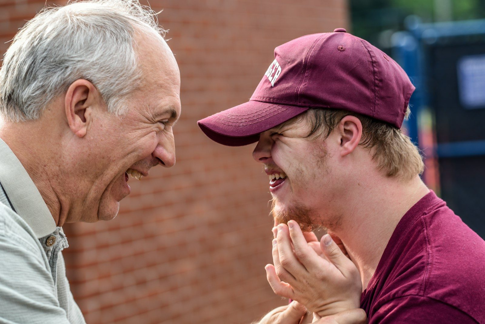
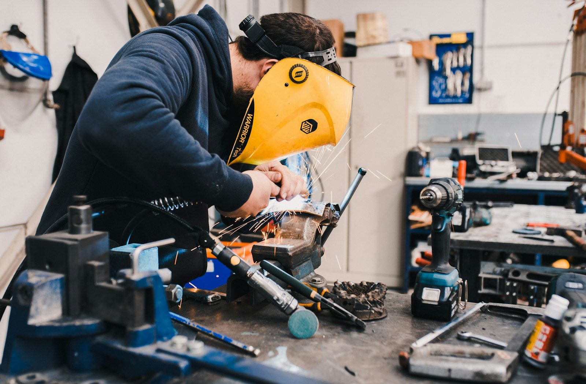

Bild 1: Jung und Alt (Startseite, Station 6)
Foto: Nathan Anderson / Unsplash
Unsplash-Lizenz (https://unsplash.com/license). Verkleinert auf 1600 px Breite.

Bild 2: Azubi in der Werkstatt (Station 8)
Foto: Aurelien Romain / Unsplash
Unsplash-Lizenz (https://unsplash.com/license). Verkleinert auf 1600 px Breite.
Alle Grafiken, Piktogramme, das Schaubild zum Generationenvertrag, die Waage und das Café-Bild sind eigene Zeichnungen (SVG). Das Säulendiagramm in Station 9 erstellen die Schülerinnen und Schüler aus den Werten im Schulbuch selbst.